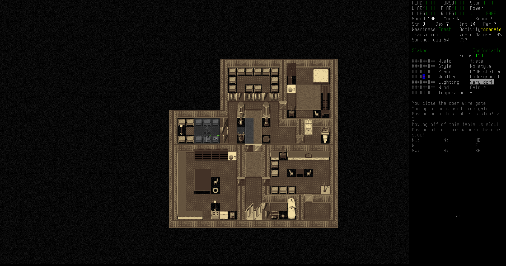
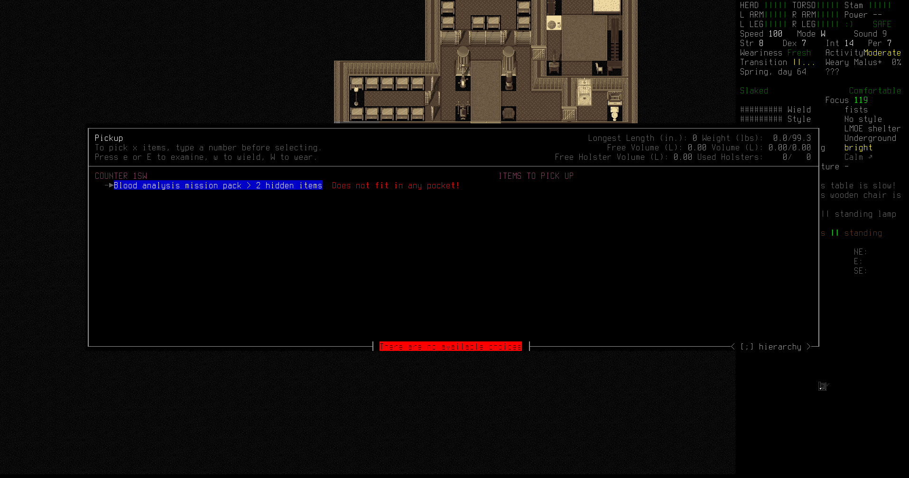

Now that the base is set up, Erik can start more organized exploration and raids. To manage having a large number of followers—when he gets them—he needs to set up stations for people to suit up and suit down.

First, Erik crafts a washing kit and washes up some holsters and sheaths he took off zombie corpses while raiding light industry compounds.
Full outfits go into the clothes room. Currently there isn't much difference, but in the future there may be full hazmat outfits, melee raiding outfits, summer outfits, etc.

Weapons—including slings, holsters, sheaths, and the like—go into the weapons side of this room. Weapons racks should include a gun and a backup melee weapon. In the future there'll be sidearms and rifles in every rack.

Finally, the racks in this half of the room hold backpacks filled with supplies. The backpacks all contain vital tools, like flashlights, multitools, lighters, and prying tools. Eventually the tools will become standardized, but for now there is a little variance between the tools, though they all provide mostly the same capabilities.
Finally, the counters in the workshop are for mission packs, sets of items needed for various missions. Anyone can grab one of these and go.